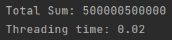
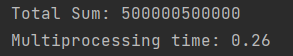
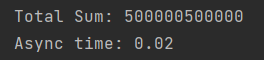

Задача 1. Различия между threading, multiprocessing и async в Python
Задание
Напишите три различных программы на Python, использующие каждый из подходов: threading, multiprocessing и async. Каждая программа должна решать считать сумму всех чисел от 1 до 1000000. Разделите вычисления на несколько параллельных задач для ускорения выполнения. Подробности задания: 1.Напишите программу на Python для каждого подхода: threading, multiprocessing и async. 2. Каждая программа должна содержать функцию calculate_sum(), которая будет выполнять вычисления. 3. Для threading используйте модуль threading, для multiprocessing - модуль multiprocessing, а для async - ключевые слова async/await и модуль asyncio. 4. Каждая программа должна разбить задачу на несколько подзадач и выполнять их параллельно. 5. Замерьте время выполнения каждой программы и сравните результаты.
Threading:
import threading
from time import time
def calculate_sum(start, end, result, index):
total_sum = sum(range(start, end + 1))
result[index] = total_sum
def main():
n_threads = 4
numbers_per_thread = 1000000 // n_threads
threads = []
results = [0] * n_threads
start_time = time()
for i in range(n_threads):
start = i * numbers_per_thread + 1
end = (i + 1) * numbers_per_thread if i != n_threads - 1 else 1000000
thread = threading.Thread(target=calculate_sum, args=(start, end, results, i))
threads.append(thread)
thread.start()
for thread in threads:
thread.join()
total_sum = sum(results)
print(f"Total Sum: {total_sum}")
print(f"Threading time: {time() - start_time:.2f}")
if __name__ == "__main__":
main()
Multiprocessing:
import multiprocessing
from time import time
def calculate_sum(start, end, queue):
total_sum = sum(range(start, end + 1))
queue.put(total_sum)
def main():
n_processes = 4
numbers_per_process = 1000000 // n_processes
processes = []
queue = multiprocessing.Queue()
start_time = time()
for i in range(n_processes):
start = i * numbers_per_process + 1
end = (i + 1) * numbers_per_process if i != n_processes - 1 else 1000000
process = multiprocessing.Process(target=calculate_sum, args=(start, end, queue))
processes.append(process)
process.start()
for process in processes:
process.join()
total_sum = 0
while not queue.empty():
total_sum += queue.get()
print(f"Total Sum: {total_sum}")
print(f"Multiprocessing time: {time() - start_time:.2f}")
if __name__ == "__main__":
main()
Async:
import asyncio
from time import time
async def calculate_sum(start, end):
total_sum = sum(range(start, end + 1))
return total_sum
async def main():
n_coroutines = 4
numbers_per_coroutine = 1000000 // n_coroutines
tasks = []
start_time = time()
for i in range(n_coroutines):
start = i * numbers_per_coroutine + 1
end = (i + 1) * numbers_per_coroutine if i != n_coroutines - 1 else 1000000
task = asyncio.create_task(calculate_sum(start, end))
tasks.append(task)
results = await asyncio.gather(*tasks)
total_sum = sum(results)
print(f"Total Sum: {total_sum}")
print(f"Async time: {time() - start_time:.2f}")
if __name__ == "__main__":
asyncio.run(main())
Сравнение времени выполнения:
  
По времени выполнения сильно проигрывает multiprocessing (из-за потраченного на создание потоков ресурсов), async и threading отработали почти одинаково.